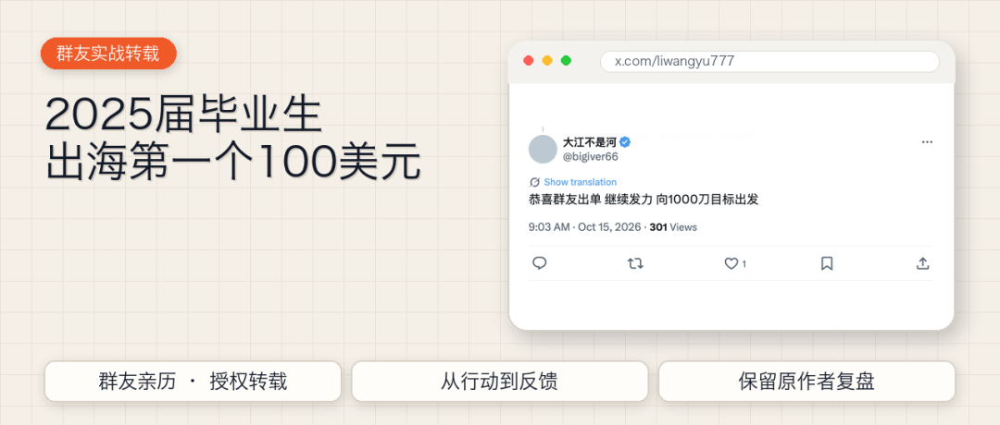
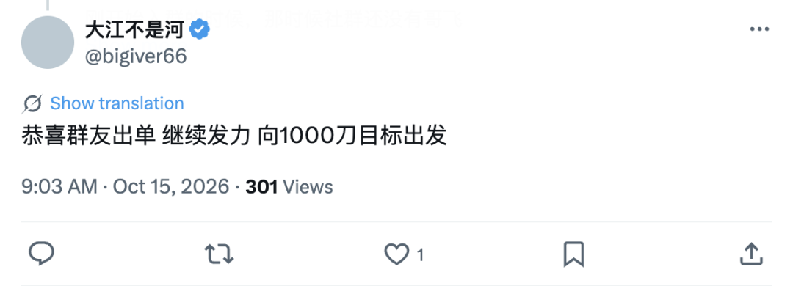
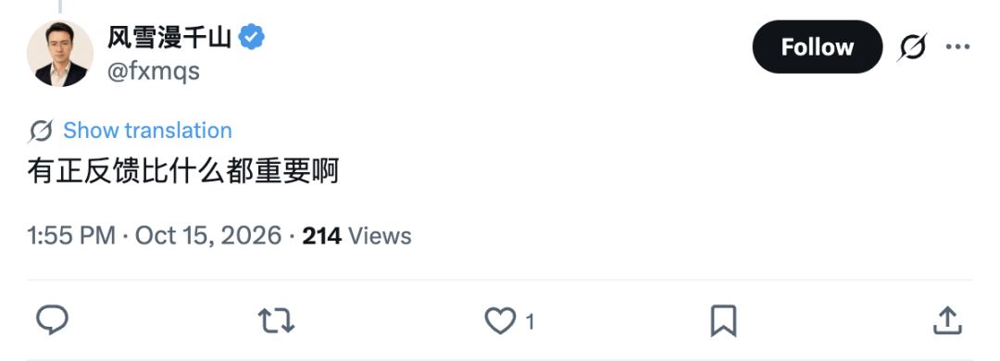
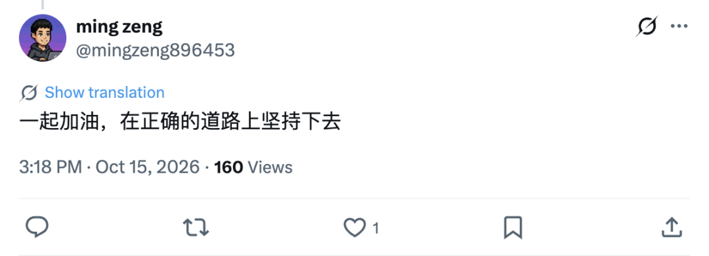

大家好，我是哥飞。
今天分享一位2025届毕业生写的出海经历，他在 X 上的账号是 @liwangyu777。
去年加入哥飞的朋友们社群后，他一边学习，一边练习买域名、部署网站、接入支付，最近赚到了出海的第一个100美元。收入还不多，但这一段从不会到会的过程，我想也能给刚开始做网站的朋友一些参考。
刚开始做网站的朋友，也可以结合
《新人出海建站从找到需求做出网站到成功变现跑通闭环大概要多久？》
一起看。
先给大家看看评论区的画风：



下面是正文。
感谢哥飞
感谢飞哥的新词系统，感谢飞哥老师。感受到了这股正反馈的力量。
缘起
我是一个 25 的毕业生。去年有幸通过良辰美老师接触了解到了出海网站这个事业，也借此认识，加入了哥飞老师的社群。
刚开始入群的时候，那时候社群还没有哥飞 AI，所以我都是自己随缘去刷帖，因为里面的干货帖子实在是太多了。但是一篇一篇的去看完，又没有这个耐心，所以只好将哥飞老师发的教程都先看完一遍，然后社群里的帖子随缘去刷去看。那会还因为搬运哥飞老师的帖子弄下来，用爬虫太频繁被限流，因为想着自己搭建知识库来看，可能效率会更好。
后面如愿的，哥飞老师一直在升级他的网站系统和工具以及经验贴，让这个服务变得越来越好用。能够看出来他是想要用心的去帮助到更多人，能够让他们感受到正反馈的力量，因为这个世界上没有能够轻易就能赚大钱的事业。
我所想要选择这个，也是因为它本质上是帮助人们构建一套睡后收入的系统，学习一种赚钱的思路，通过 SEO 去获取流量。如果对这种构建产品去获得收入的人感兴趣的，可以去了解一下。
值不值
说便宜不便宜，说贵也不贵，取决于自己对于这种东西想要的定价。你究竟喜不喜欢去做这样一件事情？现在有了 AI，启动和做这些事情会变得极大的方便，但是入行的过程中肯定充满着各种各样的艰险。
做网站还需要投入时间、精力，以及域名、AI 工具和各项服务的费用。
我的成长
接下来讲一讲我在这过程中的成长。
我是去年 10 月多加入的，所以我就属于有空就看看，有空就看看。因为之前并没有什么编程的经验和贡献，所以很多东西都是靠着 AI 去帮助我们。在现在这个阶段，聪明的 AI 就已经能够帮我们解决到很多这种事情，并不需要担心太多问题。如果有问题，你抛给它就好了。当然，该有的一些逻辑架构能力还是得有的。
所以在这过程中，我就学会了耐心去做事，沉下心去研究一个又一个问题。不懂的就问AI。可能是这个问题部署到Cloudflare上面怎么样子，有时候就是那么的奇葩，你怎么也解决不了，因为那就是一个bug。但是你也得去研究解决，要么换个账号或者怎么样子。过程就是这么的神奇美妙，探索这个世界的过程。我就不断的摸索探寻。先做能够跑起来的最小阻力的动作，先去感受正反馈。把上站这个动作先去做一遍，不要想着一做一个产品就能够爆火。先把一些基本功练会：
怎么买域名？
怎么部署域名？
怎么配置环境变量？
怎么上架？让你的产品能够展示在网络上，被人所搜索到。
怎么接入支付？
环环相扣。自己多做几遍，相当于完成作业一样。想吃饭就得先感受怎么拿筷子夹菜的感觉，怎么端碗的感觉。
如果真的喜欢的话，就做一些能让自己坚持下去的事情。多看看鸡汤，多去即刻上面看各个大佬他们的成功史，学习和了解一些前沿的技术，慢慢感受。你可以将自己做出来的作品分享给身边人去使用和体验。这个作品可以是网站，也可以是 APP，也可以是一些插件。做的过程并没有那么难，你把你想要做的跟 AI 聊，AI 就会一五一十的教你去怎么做。过程也是你输入 AI，AI 教你怎么去操作，无非就是一些填写表单或者按钮的形式。
正反馈的感觉
慢慢的感受正反馈。我就是这样子去做一些东西，做一些新词，感受到变化，因为它正反馈链路没有那么长。
原来后台有数据是这种感觉。
网站收录和编入索引是这种感觉。
产品有用户是这种感觉。
能够在后台看到用户的操作是这种感觉。
能够认识更多的小伙伴，是这种感觉。
也因为出海事业，我也认识了一些小伙伴，是这个出海的桥梁让我接触到了他们。后面的过程中，就是不断在追逐热点，去做一些重复性的事情，打磨自己动作，让自己的动作更加熟练和利索。
给还在迷茫的兄弟
虽说才出单 100 刀，然后就说了这么多看似教育的话，但这也是我想要去分享一些我在出海事业上的体会和感受，想要给予一些还在迷茫的兄弟一些帮助。因为我在迷茫的时候，我也很喜欢看别人的来时路，看看他们是如何成长，他们的心境有什么样的变化。
并不一定说加入了哥飞，就一定要做网站。我认为可以做你想要做的任何事情。我起初之前也是想要去做一些产品 APP，帮助实现我自己的个人需求。在构建它们的过程中，会感觉到好快乐。因为构建出来的东西是自己想要的，是能够帮助到自己的。哪怕没有外界因素的存在，做这件事情也会让自己感受到快乐。就像哥飞老师他可能做这个事业一样，他既能够收获到金钱上的奖励，也能够收获到帮助到其他人的那种大爱的快乐。
有种感受就是，有时候看到别人同样的动作，别人做了就是能够出单，自己做了怎么就出不了单了？新词这样子。有些是热点，有些是机遇，还有些就是最起码能够帮助到自己。后台访客它是有变化的，追新词更多的，如果有一些直连过来的，那也何尝不算一种？访客数据的变化，也能够激励到自己，不断去做一些难的事情。
写在最后
我不知道这条路会走到什么样的结果，但是做这件事情，我是喜欢和快乐的。在自己迷茫的时候，打打鸡血，喝喝鸡汤。缓一缓，玩一玩，再继续去做。多付出一些努力，尽自己能尽的努力，但是并不是说消耗身体不睡觉的那种。剩下的就交给安排吧。
每个人都有自己擅长和适合的地方，有些人可能走一条路走不通，那就不妨试一试，换着方向。只要能达到目的，达到自己想要的东西和结果，那不就好了？至于过程，那就自己好好的体会和享受，享受里面的迷茫，享受里面的酸甜苦辣。哪怕没有获得怎样的收入，说明可能有更好的路适合你走。
人生路就是这样，或许注定，但是只要你做了该做的，命运会将你推向属于你的地方。
恭喜赚到出海的第一个100美元！
虽然不多，但代表着一种可能。从买域名、部署网站，到有人愿意付钱，他已经一步步做到了。
愿大家都能够学有所成，上站有收入！